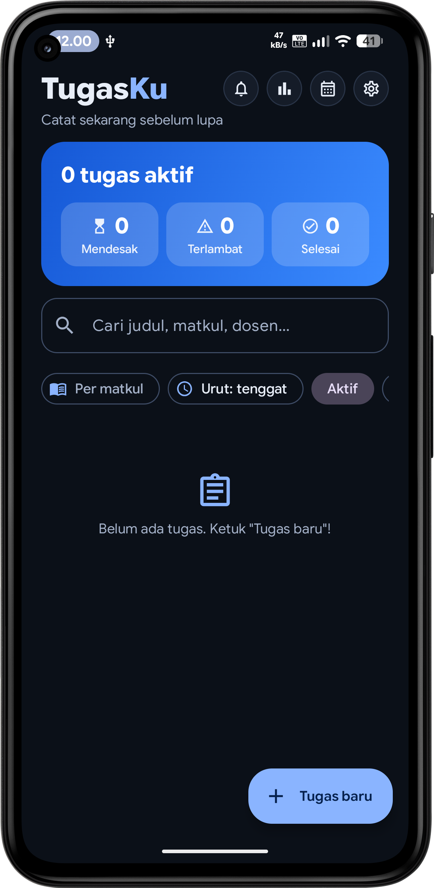
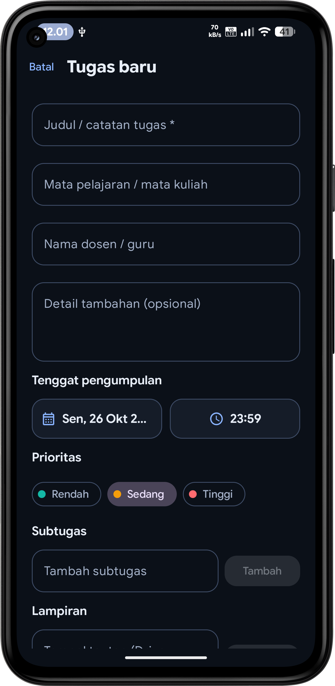
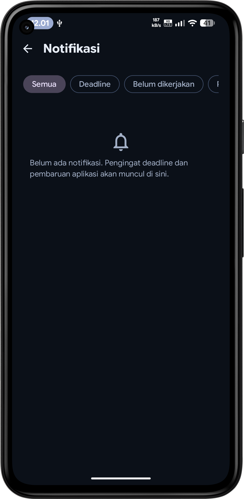
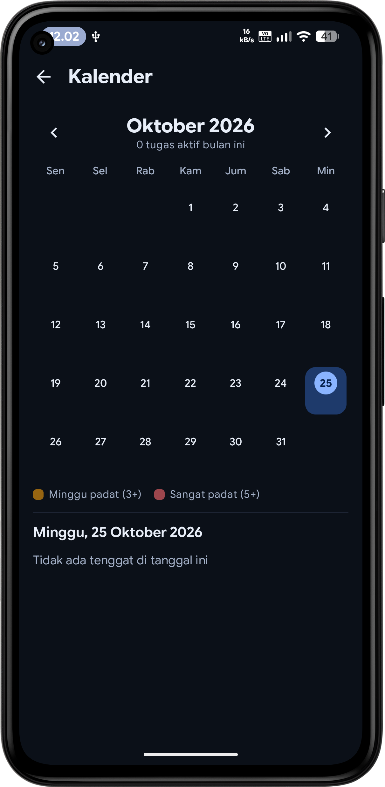
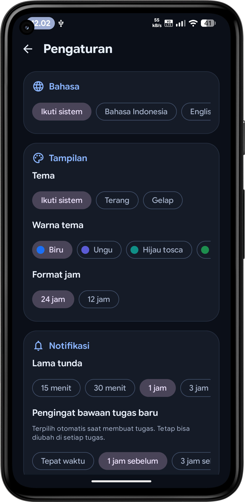
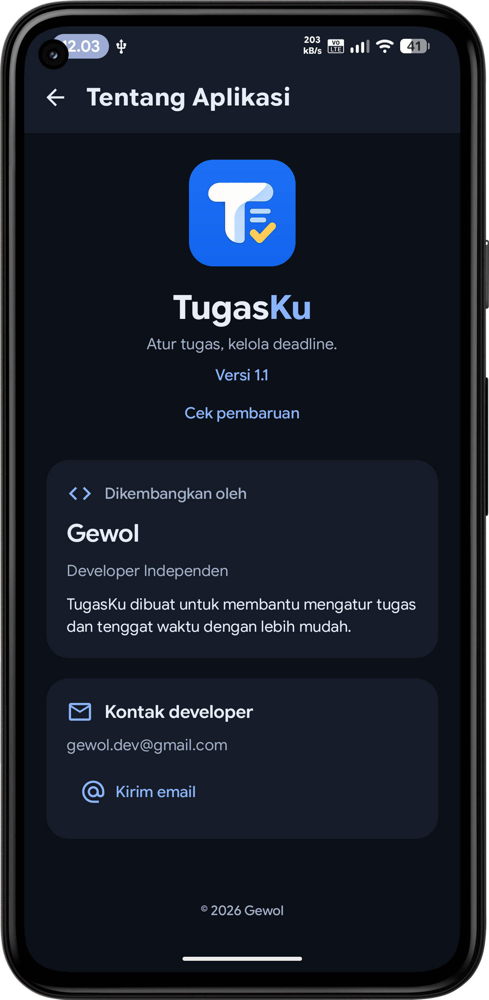

Catat tugas, atur tenggat, dan sesuaikan pengingat dalam satu aplikasi. Geser untuk melihat tampilannya.

Beranda — lihat ringkasan tugas dengan cepat

Tambah tugas — catat detail dan tenggat

Notifikasi — pantau pengingat dan pembaruan

Kalender — tinjau tenggat berdasarkan tanggal

Pengaturan — sesuaikan tampilan dan pengingat

Tentang TugasKu — informasi dan kontak developer
Gunakan tombol, titik navigasi, atau geser gambar di layar sentuh.